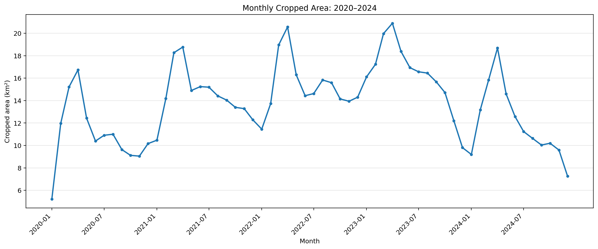
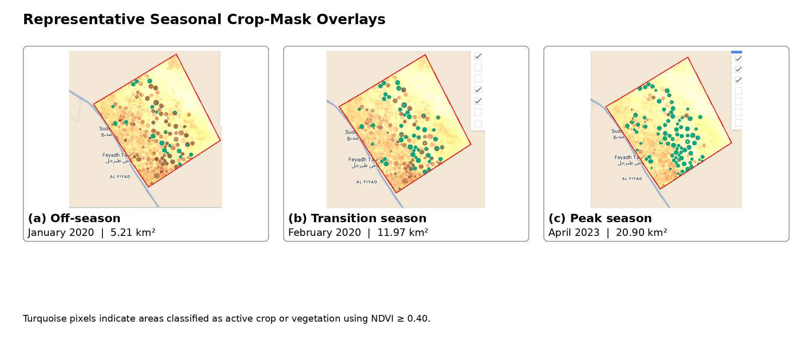

PROJECTS
Selected geospatial work.
Selected work in remote sensing, satellite imagery, agricultural analysis and Web GIS.
Wadi As-Sirhan Crop Masking
Saudi Arabia · 2020–2024
A remote sensing study identifying pivot agricultural areas in Wadi As-Sirhan using Sentinel-2 imagery and NDVI time series, while examining temporal changes between 2020 and 2024.
Sentinel-2 L2A · SCL Cloud Masking · Monthly Median · NDVI · Threshold-based Crop Masking
GEOINSIGHT
Wadi As-Sirhan Web Platform
Web-based Agricultural Remote Sensing Platform
A separate web-based agricultural remote sensing platform developed by extending the analytical concepts and experience gained from the Wadi As-Sirhan crop masking study.
The platform integrates satellite imagery analysis, parcel management, automatic field detection, phenology, multi-year trends, moisture monitoring, irrigation requirement calculations and scenario-based water management.
Satellite Imagery · Parcel Management · Automatic Field Detection · Phenology Analysis · Multi-Year Trend · Crop Classification · Moisture Monitoring · Water Requirement · Water Management
| Figure | Analysis | Period |
|---|---|---|
 | Monthly cropped area | 2020–2024 |
 | Seasonal crop masks | 2020–2024 |